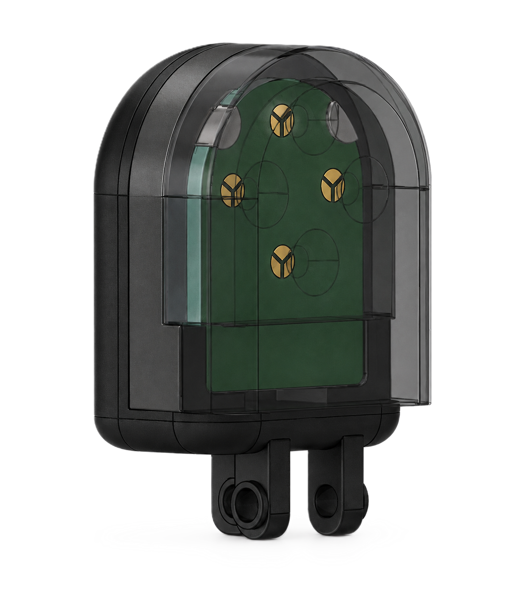

로봇손용 3축
손끝 촉각 센서
로봇 손끝에 장착해 3축 접촉력과 접촉 위치를 측정하는 정전용량 센서입니다. 소형 센서 안에 전극과 측정·처리·통신 회로를 통합하고, 힘 추정과 로봇손 파지 실험으로 평가했습니다.

3축 힘·접촉 위치 실험
센서의 접촉면을 따라 움직이거나 수직·전단 방향으로 힘을 가하면서, 추정한 접촉 위치와 3축 힘을 확인하는 실험입니다.
센서 구조와 측정 원리
연속된 실리콘 접촉면 아래에 네 개의 역원뿔대 구조를 두고, 각 구조와 대응하는 원형 전극을 같은 크기의 세 섹터로 나눴습니다. 수직 압축에서는 세 정전용량이 함께 증가하고, 전단 변형에서는 섹터 사이에 차이가 생깁니다. 공통 성분과 차동 성분을 캘리브레이션해 세 축 힘을 추정합니다.
Park 등(2025)의 1축 그리퍼용 손끝 센서의 하중 전달 구조를 바탕으로, 세 섹터 전극과 3축 캘리브레이션을 추가했습니다. 로봇손 장착 길이를 줄이고 측정·처리·통신 회로를 하나의 모듈에 통합한 것이 본 연구의 확장점입니다.
- 센서 외형
- 17.5 × 21.5 × 9 mm
- 전극 구성
- 4 groups / 12 sectors
- 선택한 그룹 간격
- 6 mm
- 회로
- 4-layer PCB · AD7147
- 접촉부
- 전도성 실리콘 + 유전체
- 출력
- Fx, Fy, Fz · contact position
외형 치수는 손가락 장착부를 제외한 값입니다. 6 mm 간격은 5–7 mm의 설계 범위에서 센서 크기를 고려해 선택했습니다.
회로 구성과 캘리브레이션
세 방향의 전동 스테이지와 AFT50-D15 기준 힘·토크 센서를 사용했습니다. 무부하 오프셋을 보정하고 시간과 좌표계를 맞춘 뒤, 각 축마다 20회 하중을 인가한 데이터로 모델을 훈련했습니다. 평가에서는 훈련과 분리한 축별 5회 반복을 사용했습니다.
수직 성분은 그룹별 정전용량의 합에서, 전단 성분은 섹터의 차동 신호에서 추정합니다. 가중 최소제곱 적합으로 하중을 가하지 않은 축의 출력을 줄이고, 네 그룹의 수직력 기여도를 가중치로 사용해 접촉 위치를 계산했습니다.
힘·접촉 위치 추정 성능
독립적인 힘 추종 평가에서 수직력 RMSE는 0.251 N, 두 전단력 RMSE는 각각 0.296 N과 0.304 N이었습니다. 아래 수치는 힘 추종을 기준으로 선택한 캘리브레이션 결과입니다.
| 축 | 기록된 평가 하중 | RMSE |
|---|---|---|
| Fz | 0–20 N | 0.251 N |
| Fx | 약 −5.4~6.9 N | 0.296 N |
| Fy | 약 −5.4~8.0 N | 0.304 N |
별도의 디커플링 평가에서는 두 전단 축 사이의 0 N 기준 RMSE가 0.066 N과 0.109 N으로 감소했습니다. 이때 힘 추종 RMSE는 0.397 N과 0.391 N으로 증가해, 교차축 억제와 힘 추종 사이의 관계를 확인했습니다.
접촉 위치는 지름 4 mm의 팁으로 약 5 N을 가하며 14개 지점에서 평가했습니다. 지점마다 세 번 누른 데이터를 모아 구한 중앙값의 평균 위치 오차는 0.074 mm였습니다. 이 값은 각 지점의 대표 위치 오차이며, 전체 표면의 순간 오차나 공간 분해능을 의미하지 않습니다.
로봇손 파지 실험
AIDIN-Hand의 손가락에 센서를 장착하고 파지·유지·해제와 외란 인가 실험을 수행했습니다. 전단력 변화를 이용해 손가락의 닫힘을 조절하며 파지력을 높이는 동작을 확인했습니다.
물체에 장착한 기준 센서는 외부의 합력을, 각 손끝 센서는 국부 접촉력을 측정합니다. 서로 다른 하중 경로를 측정하므로 두 신호의 크기 차이를 그대로 센서 오차로 해석하지 않았습니다.